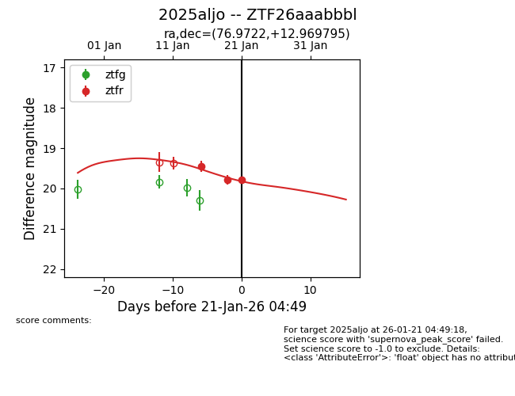
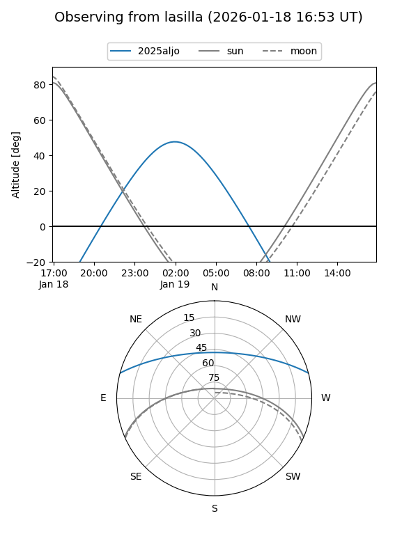
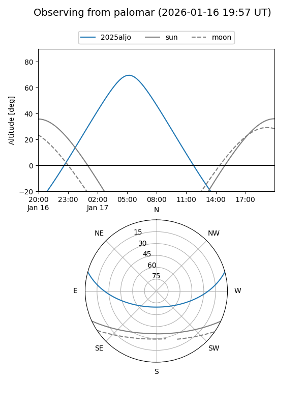
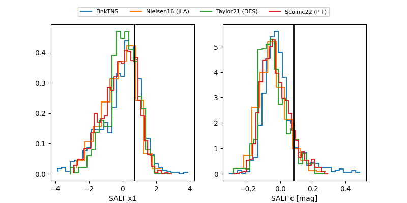

2025aljo
Target 2025aljo at 2026-01-15 09:55
Aliases and brokers:
FINK: link
Lasair: link
ALeRCE: link
TNS: link
YSE: link
alt names
ZTF26aaabbbl (ztf,fink_ztf)
2025aljo (tns,yse)
Coordinates:
equatorial (ra, dec) = 76.9722,+12.96979
equatorial (HMS+DMS) = 05:07:53.34,+12:58:11.26
galactic (l, b) = (188.7458,-16.04053)
Flags:
Photometry:
last ztfr=19.45
1 ztfr detections
Lightcurve

Visibility


Additional plots
